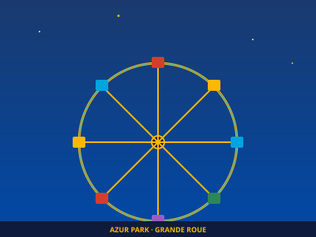
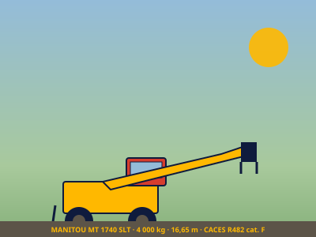
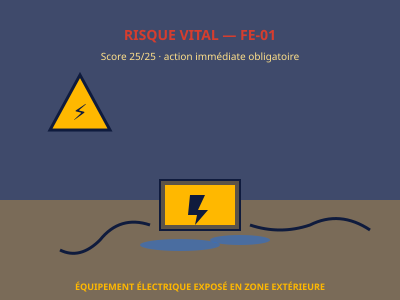
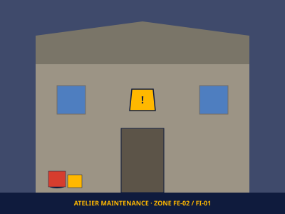
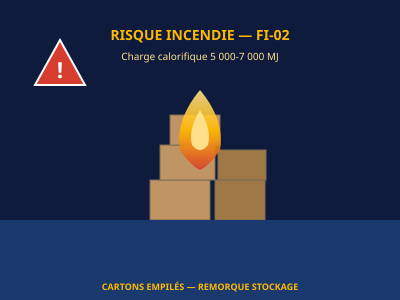
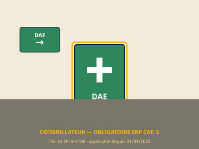
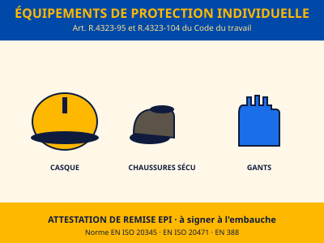

Une saison maîtrisée,
deux points vitaux à clore.
Synthèse opérationnelle issue des visites de sécurité 2013-2025 (RiskAttitude / SECURE) et de l'audit blanc 2024. La culture sécurité d'Azur Park est saluée par le consultant ; deux non-conformités résiduelles requièrent une action immédiate.
2 risques VITAUX résiduels — action sous 24 heures
FE-01 : équipement électrique au sol (score 25/25). FS-01 : non-conformité DAE depuis le 1er janvier 2022 (≥ 3 ans 6 mois). Exposition pénale du dirigeant.
Méthodologie de référence
Plateforme élaborée pour Azur Park (Gassin), en s'inspirant des bonnes pratiques observées dans les DUE de référence Antibes Land 2026 et Koaland V13-2026, conformément à la synthèse comparative jointe au projet. Articulation : ce site web + DUERP Word v3 (signé) + classeur Excel des 839 critères (pilotage opérationnel).
Le parc vu du ciel,
les risques localisés.
Vue satellite du site Azur Park (Carrefour de la Foux, Gassin) avec repérage des zones sensibles identifiées lors des visites de sécurité 2024-2025. Cliquez sur les marqueurs pour voir le détail des risques associés.
- FE-01 · Équipement électrique au sol
- FE-02 · Tableau électrique atelier
- FI-02 · Cartons remorque
- FI-03 · Végétation sèche stockage
- FM-02 · Travail en hauteur
- FS-01 · Absence DAE
Méthodologie cartographique
Cartographie schématique réalisée à partir des observations terrain des visites SECURE des 9 et 11 juillet 2025 (David MUSEUR), croisées avec la vue satellite Google Maps (43,2611° N · 6,5761° E). Les positions des marqueurs sont approximatives — pour un repérage métré, se référer au plan général du parc à intégrer en pièce jointe physique du DUERP. Action recommandée : faire valider ce plan par Sam PAILLON et l'annexer au registre de sécurité ERP.
16 fiches de risque détaillées
Format unifié — niveau, score, source, citation Sam PAILLON quand pertinente, conséquences, mesures, EPI, conduite à tenir et références réglementaires.
839 critères pilotables
Référentiel RISC-4 — 9 catégories. Chaque critère peut être marqué Oui / Non / Sans objet. La saisie est conservée localement dans votre navigateur (aucune donnée envoyée en ligne).
Plan d'action 2026
Trois horizons : urgent (< 1 semaine), prioritaire (< 1 mois), moyen / long terme (1 à 3 mois).
Une démarche continue
depuis 2013.
Réactivité de l'équipe technique d'Azur Park — Sam PAILLON — saluée par le consultant. Les criticités résolues témoignent de la culture sécurité déployée sur le parc.
Contrôle systématique des EPI
Stockage Algeco Sécurité (liquides inflammables)
Exercices de simulation de panne sur manèges
DUERP en ligne via plateforme RISC-4
Communication multilingue (saisonniers)
Mise à jour annuelle systématique pré-saison
Attestations & autorisations
Documents détachables intégrés au DUERP Word — à compléter, signer et conserver dans le dossier du personnel.
Sécurité des manèges :
un cadre strict.
Synthèse du cadre légal, normatif et réglementaire qui s'applique à Azur Park en tant qu'exploitant de manèges et établissement recevant du public (ERP catégorie 5, type PA).
Loi n° 2008-136 du 13 février 2008
Cadre juridique strict pour tous manèges fixes ou itinérants : conception, exploitation et entretien sécuritaires obligatoires.
Norme NF EN 13814 (2007)
Conception, fabrication et documentation technique. Confère une présomption de sécurité — manuel et instructions au public obligatoires.
Arrêté du 12 mars 2009
Périodicité et points de contrôle des manèges. Contrôle initial puis périodique annuel pour les attractions à sensations fortes.
Décret n° 2008-1458
Conditions d'application — dossier technique, attestation de bon montage, contrôles par organisme agréé.
Exclusion de la directive Machines UE
Les matériels d'attraction sont exclus de la directive 2006/42 CE — la France impose un cadre national spécifique.
Article L.4121-1
Obligation générale de prévention des risques professionnels — résultat de sécurité.
Articles R.4121-1 et suivants
DUERP — Document Unique d'Évaluation des Risques. En place chez Azur Park depuis 2015, révisé annuellement.
Articles R.4226-5 à R.4226-21
Installations électriques — vérification annuelle Q18 par organisme accrédité.
Article R.4323-55
Autorisations de conduite nominatives — engins de manutention.
Articles L.441-4 / D.441-1 CSS
Registre des accidents du travail bénins — inscription dans les 48 h.
Décret n° 2018-1186
DAE obligatoire dans les ERP catégorie 5 depuis le 1er janvier 2022. Non-conformité actuelle d'Azur Park.
| Autorité | Compétence | Référentiel |
|---|---|---|
| Maire de Gassin | Pouvoir de police générale — examen du dossier réglementaire avant ouverture annuelle (rapports de contrôle technique en validité, déclaration de conformité, attestation de montage signée). Peut exiger un contre-contrôle. | Code général des collectivités territoriales |
| Préfecture du Var | Planification générale via DREAL et DDTM. Guide « Sécurité des fêtes foraines » mis à jour le 22/02/2024. | var.gouv.fr |
| Commission de sécurité | Visite locale annuelle — vérification de l'état des installations, application NF EN 13814, affichage des consignes. Catégorie 5 : visite non systématique mais possible. | Code de la construction |
| Inspection du Travail | Contrôle de la mise en œuvre du DUERP, des registres, des autorisations de conduite, du suivi médical. | Code du travail |
| Organismes agréés | Contrôle technique périodique des manèges et installations électriques. | APAVE, SOCOTEC, UIMM, Dekra |
| CRAM / CARSAT Sud-Est | Notification du taux AT — possibilité de minoration en cas de démarche de prévention démontrée. | Code de la sécurité sociale |
| Médecine du travail | Aptitudes médicales — fiche d'entreprise — visites de reprise après 21 nuits. | Service de santé interentreprises |
Présomption de sécurité par la conformité
La conformité de chaque manège à la norme NF EN 13814 confère une présomption de sécurité, opposable en cas de litige. Il est essentiel qu'Azur Park conserve l'ensemble des certificats CE / livrets techniques fabricants, attestations de bon montage, et rapports de contrôle technique périodique dans le dossier technique de chaque attraction. Recommandation : audit externe indépendant en complément de l'audit annuel David MUSEUR pour anticiper toute évolution normative européenne.
Bibliothèque documentaire
L'ensemble des documents constitutifs du dispositif HSE Azur Park — livrables 2026, comptes-rendus de visite SECURE, audit blanc 2024, plan de prévention 2023, visites historiques 2013, support engins, modèles d'attestations.
Bibliothèque évolutive
Cette bibliothèque est un ensemble vivant : à chaque nouvelle visite SECURE, audit ou mise à jour réglementaire, les documents seront ajoutés et l'historique conservé. Pour transmettre tout ou partie de la bibliothèque à un tiers (Inspection du Travail, assureur RC, médecine du travail, expert-comptable de l'audit social), utiliser le bouton télécharger sur chaque carte. Les documents sont également disponibles via accès direct dans le dossier /docs/ du déploiement.
Galerie illustrée
Illustrations vectorielles couvrant les principales zones et thématiques du DUERP — réalisées dans la charte graphique Azur Park (bleu cobalt + jaune solaire). Pour les photos réelles du site, se référer aux comptes-rendus de visite SECURE 2024-2025 (voir Bibliothèque).







À propos des illustrations
Les visuels présentés sont des illustrations vectorielles SVG conçues spécifiquement pour cette plateforme dans la charte graphique Azur Park (bleu cobalt #0049A8 + jaune solaire #FFB800 + accents méditerranéens). Elles ne contiennent aucune image identifiable du parc — pour préserver la confidentialité des constats internes de sécurité. Les photos réelles des situations à risque (atelier, équipements, zones extérieures) sont disponibles dans les rapports SECURE 2025 téléchargeables depuis la Bibliothèque documentaire.
E-réputation &
droit à l'oubli.
Procédures opérationnelles à l'attention de la direction d'Azur Park si un contenu en ligne (article de presse, avis, mention) doit être contesté, rectifié, désindexé ou supprimé. Ce module est un guide pratique — il ne se substitue pas à un avis juridique.
Méthode recommandée — du moins coûteux au plus engageant
Toujours commencer par la voie amiable directe avec l'éditeur du contenu, puis escalader uniquement si nécessaire. Une démarche disproportionnée peut produire un effet inverse (effet Streisand).
URL exacte
Copier l'adresse complète de chaque page concernée. Faire une capture d'écran horodatée (date système visible) — cela constituera la preuve.
Type de contenu
Article de presse / avis client / forum / réseau social / blog / archive. Le régime juridique applicable diffère selon la nature de la source.
Préjudice invoqué
Atteinte à la vie privée, données personnelles, diffamation, dénigrement commercial, information obsolète ne reflétant plus la réalité, faits inexacts.
Ancienneté du contenu
Élément déterminant : pour la désindexation Google, plus le contenu est ancien et sans intérêt public actuel, plus la demande a de chances d'aboutir.
Identifier le responsable de publication
Mentions légales du site (obligatoires) ou directeur de publication pour la presse. À défaut, hébergeur identifiable via la base WHOIS.
Courrier recommandé avec AR
Demander la suppression, la rectification ou la mise à jour du contenu — préciser les motifs juridiques (RGPD, droit à l'oubli, faits obsolètes, droit de réponse). Délai de réponse raisonnable : 1 mois.
Droit de réponse (presse)
Loi du 29 juillet 1881 — toute personne nommée ou désignée dans un journal a droit à un droit de réponse, à publier dans les mêmes conditions de visibilité que l'article d'origine. Délai : 3 mois.
Formulaire officiel Google
Adresse : reportcontent.google.com/forms/rtbf — formulaire « Demande de suppression de contenu en vertu de la législation européenne sur la protection des données ».
Critères d'examen
Caractère excessif, inadéquat ou plus pertinent ; ancienneté ; absence d'intérêt public actuel ; données sensibles. Décision Google sous 1 à 3 mois.
Recours en cas de refus
Saisine de la CNIL (formulaire en ligne — gratuit) qui peut enjoindre Google. Délai 3 à 6 mois. Recours ultime : juge administratif (Conseil d'État).
Important
La désindexation ne supprime pas le contenu — elle le rend invisible aux recherches Google sur le nom concerné. Le contenu reste accessible via URL directe.
Référé devant le TJ
Article 6.I.8 LCEN — possibilité d'obtenir le retrait d'un contenu manifestement illicite sous 24-72 heures. Coût : 1 500 à 3 000 €.
Diffamation
Loi du 29 juillet 1881 — délai de prescription court (3 mois). Plainte avec constitution de partie civile possible.
Dénigrement commercial
Article 1240 du Code civil — concurrence déloyale ou abus de la liberté d'expression. Tribunal de commerce.
Conseils
Faire appel à un avocat spécialisé en e-réputation / propriété intellectuelle. Les démarches doivent rester proportionnées — un référé sur un article d'intérêt public (santé, sécurité publique) a peu de chances d'aboutir.
Pour un article de presse couvrant un événement ancien (par exemple un incident professionnel datant de plusieurs années), la jurisprudence française et européenne (CEDH, M.L. et W.W. c. Allemagne) reconnaît un droit à l'oubli renforcé dès lors que :
L'événement n'a pas donné lieu à des poursuites judiciaires
L'information n'a plus d'intérêt public actuel
L'événement remonte à plus de 5 ans
La personne concernée n'est pas une figure publique
Le maintien du contenu cause un préjudice professionnel ou personnel
Dans ce cas, la démarche peut viser : (a) l'éditeur du journal pour anonymisation ou retrait, (b) Google pour désindexation, (c) les agrégateurs (archives.org, sites de cache) pour suppression. Une démarche coordonnée multi-acteurs est plus efficace qu'une démarche isolée.
Recommandation pratique pour Azur Park
Avant toute action, cartographier l'écosystème en ligne de la marque : ce qui ressort sur Google « Azur Park Gassin » sur les 3 premières pages, articles de presse historiques, avis Google/Tripadvisor, réseaux sociaux. Identifier ce qui est un irritant réel (impact commercial mesurable) versus ce qui relève d'un simple inconfort. Investir prioritairement dans la création de contenu positif récent (publication régulière, communiqués sur la démarche sécurité 2026, partenariats locaux) qui repousse mécaniquement les contenus anciens en pages 2 et 3 des résultats — souvent plus efficace que les démarches juridiques.